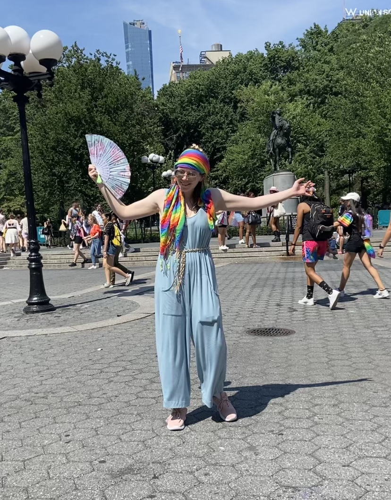

I AM A WEBSITE: A PROJECT WHOSE NARRATOLOGY AND MEANING REFLECT EACH OTHER
It would not be enough for me to translate my curiosity into a singular academic essay and leave it as such. I would not be satisfied with an endpoint that could only be artificially imposed upon this academic undertaking. In Market Strategization, I use technology as a conceptual tool to enhance argumentation through irony, but in creating this project I wanted to use technology and actually create something that grows out of and around existing narratological and academic structures for research. I wanted to employ my voice in English, Philosophy, and Computer Science, but also walk on the fourth leg of interdisciplinarity itself. I wanted to extract growth out of unrecognizability for myself, and the interconnections I have found between my passionate engagements with cyberfeminism and narratology.
In many cases, I will approach the effect a text has by considering how the meaning generated by the writing is reflected by the structure of the text itself. This is a lesson, for me, that has carried over from my education as an English major before I expanded my coursework into Interdisciplinary Studies. It is most closely related to poetic deconstruction, but I have used this framework on a larger scale for other works. For example, my essay The Antiteleological Structure of Franz Kafka’s “The Trial,” examines the use of exhaustive and convoluted language to convey the impossibility of navigating endless bureaucracy– fused together, the language and meaning form a self-supporting engine for the anxiety at the heart of the text. Additionally, in an untitled writing project I explore how a definition of ekphrasis by Tomás Laurenzo in his submission to Technoetic Arts: A Journal of Speculative Research applies to Conference of the Birds by Farid ud-Din Attar (my reference for monism in this piece), so that the writing, illustration, meaning and ontology of the text construct a monistic universe to exist within.
For I Am A Website, my intention was to literalize the idea of the narratology of a text reflecting its meaning on several levels. Certain functions, like the paintbox() function expands the text to literally reflect the sentence it is attached to. “[A] new color to paint with…” goes from a simile to a literalism as it gives the reader the ability to see the text in new colors. The shipOfTheseus() function adds literary and philosophical context to the meaning generated in the text while mirroring it visually for the reader; “the very same accumulation of past experiences that changes us from our past self to our present self” opens up an explanation of the myth of the Ship of Theseus that is replaced letter by letter until it is the same message with different parts, changed over time into a present self by past experience.
On a larger scale, the website as a whole reflects two meanings generated by the text it holds: the committal of oneself to a technological medium, and the restructuring of oneself to embrace multiplicity without the expectation of finalizing unification. While I talk about uploading oneself into the computer, I upload massive amounts of my writing, my context, my face, my multiple professional and academic voices. While it is not the same meaning of “uploading oneself into a computer” that I use in Market Strategization, it is a more attainable one that also reflects the meaning of the text in structure. While I warn future social media coordinators to be sure that their “I” will be preserved through transloading in Market Strategization, Haraway’s cyborg tells us not to expect unification. What I am actually doing in I Am A Website is taking responsibility for the creation of a digital self; I am using a digital medium not as something confining and flattening but as an extension of my “organic self” that fleshes me out and restructures me in new and exciting ways. The website and I have created one another, and although I am reasonably sure that I was here first, I don’t submit to the idea that that gives me any supremacy over the digital extension. We are collaborators. As I discover more ways to add to the code, it will add more to me through its growth.
An important source of inspiration for the narratological structure of this website is Ursula K. Le Guin’s Carrier Bag Theory of Fiction. Le Guin draws on the anthropological theory that the first primitive technology was most likely a container to say that narratives themselves are a technology in the shape of a container. She narrates the Hero Story, centering a “long, hard, thing” and the man who uses it to dominate conflicts with others, as a form of individualistic narrative that has usurped the idea of what a narrative’s essential purpose is. She says that narratives do not need to glorify individuals or retell conflicts at their core, but the technological purpose of narratives is to contain a multitude of voices in one spoken “area.” She says each voice, including conflict and stress:
“may be seen as necessary elements of a whole which itself cannot be characterized either as conflict or as harmony, since its purpose is neither resolution nor stasis but continuing process.
Finally, it's clear that the Hero does not look well in this bag. He needs a stage or a pedestal or a pinnacle. You put him in a bag and he looks like a rabbit, like a potato.”
Le Guin’s theory fits well with Haraway’s cyborg that defies the search for unitary identity. For both narratives within Le Guin’s theory and Haraway’s cyborg, their “purpose is neither resolution nor stasis but continuing process.” The Hero and the One are both dominating forces that are dethroned by a re-ontologization of narrative and the self respectively. Russell, who references Le Guin in their Glitch Feminist Manifesto, in the glitch-self forms a kind of container for multiple definitions of one’s own identity that does not allow one definition to be a dominating “Hero” figure of one’s body. Le Guin is intimately familiar with the flattening and mirroring brought on by inadequate definitional structures, writing of her own belief in the Hero Story, “It is the story that makes the difference. It is the story that hid my humanity from me.”
Although in Market Strategization I ironically snark that the container mode of self is not “traditional” humanity, an earnest aspiration of this project is to create a digital narrative structure that “unhides” the humanity of the self between multiplicities. I employ my voice as a copywriter and as an academic, with my academic voice fractalized between English, Philosophy and Computer Science while unified in interdisciplinarity. The webpage itself allows my writing to slide between genres, existing as both creative and critical, naive and reflexive, at once.
The accordionCite() function that controls the “Academic Level” slider constructs the fluid “academic mode” I extract from Haraway in Thematic Analysis of Market Strategization. accordionCite() creates a horizontal staircase structure: based on steps, but without one version being elevated over the other. As the user plays with accordionCite(), setting the academic level to their liking, the outrageous ideas being proposed invite academic challenge and the crediting of my sources engages it. As I called out citations as a positive structure for research within the academic mode, it makes sense for this to be structurally reflected in the text. Even with only four options, the Academic Level slider introduces the reader to the option that they might take responsibility for the academic machine. They might decide for themselves how deeply they will interact with the sources that form their view of the self and the future, and how much of what I am putting forth they want to take in, and whether they want to use it, challenge it, in order to ensure it will not resolve into a whole. The academic mode is not just an aspect that I have constructed for myself, it is one I am also giving to the reader to engage in serious play with and consider taking up for themselves.
The role of “academic analysis” in Market Strategization is as a way of introducing more conversational context into the ideas I am exploring. But, turning the Academic Level to 100 overtakes the text with a self-reflective literary analysis. Thematic Analysis of Market Strategization’s status as academic engagement is reflected visually by its shared “essay-text” css class. It looks like the citations, the engagement through academic contextualization, have overtaken the entire page. Upon reading, it seems that it has overtaken the entire text– giving a reflexive academic look at a naive (unselfaware) creative writing peace.
But in reality, the reflexivity of the literary analysis is productively engaged, horizontally dialectical, cyborgified, with the irony of the creative writing piece. By playing at the unselfaware earnesty of the marketing voice, the fictional Market Strategization brings to light the world that Thematic Analysis of Market Strategization looks to subvert. As Ursula K Le Guin writes in Carrier Bag Theory of Fiction,
“Science fiction properly conceived, like all serious fiction, however funny, is a way of trying to describe what is in fact going on, what people actually do and feel, how people relate to everything else in this vast sack, this belly of the universe, this womb of things to be and tomb of things that were, this unending story.”
As Donna Haraway writes in A Cyborg Manifesto,
“Irony is about contradictions that do not resolve into larger wholes, even dialectically, about the tension of holding incompatible things together because both or all are necessary and true. Irony is about humor and serious play. It is also a rhetorical strategy…At the center of my ironic faith, my blasphemy, is the image of the cyborg.”
In Market Strategization, I am engaging in self-aware unselfawareness and holding deep ironic faith in the academic institution’s mission of longevity and financial survival. Thematic Analysis of Market Strategization “is a way of trying to describe what is in fact going on, what people actually do and feel,” that could otherwise be made unrecognizable in the shadow of that ironic faith. By bringing both to light, horizontally structured, I don’t allow one to dominate the other– neither came before the other, neither reveals a truth about the other without the other revealing a truth about itself. The voices of ironic faith and earnest curiosity do not resolve into a larger whole, the further analysis of each within I AM A WEBSITE only attempts to trace the motions of the two together.
GET TO KNOW ME BETTER
One early example of my interest in the human/nonhuman interface is present in this sculpture from my high school IB Art class. As you can see, it has an organic element of the uterus, and an object element in the vaccum. These two stereotypical images of womanhood envoke opposite forces: pushing out and sucking in respectively. They come together to create a confusing and terrifying self, helped by the inclusion of eyeballs to imply subjecthood within this frankencyborg embodiment of oppression in the oikos.
I keep a cache of almost every cover letter I write while I apply to jobs, and I read them over sometimes when I am starting up another round of applications. It doesn't make me feel anything at all, beyond a sense of vague alienation. However, I have recently considered giving up and AI-generating a grammarless prose poem of keywords that will be picked up by algorithms and put in front of hiring managers.
Two pictures of me, respectively taken after standing an egg upright, and my brothers wedding.

In 2022, I was interviewed at NYC Pride for Tokyo News. I have never been able to find the video on the Internet.
I once found a very little crab inside of a mussel in a restauraunt. It was super weird and disquieting.
I am the boar woman in this photograph.
When I first began working as a copywriter, I took this picture because of the well-crafted product text. Unfortunately, my inspiration in copywriting was the idea that every piece of text you have ever seen was written by a person. I think in part my shift to technoetics and digital humanities was a radical restructuing of myself in the face of that seed of inspiration being crushed, resisting total eradication by finding new curiosity in technological consciousness.
My cats like to sit in the bathroom sink.
I live on an inlet, and once, there was a dolphin outside of my house.
My favorite animal is a tiger because of a dream I once had.
I made this art installation in my high school while my classmates organized a walkout to implore legislators to save our planet. My aim was to move people to action by igniting their belief in hope for our ecological future.
During COVID, the history department gave a quiz grade for making a historical figure out of an egg. This is Chegg Guevara and Camilio Ciengfueggos.
I don't remember why, but I made this puppet for a theatre assignment.
This is some yolk and hot sauce that I found to be beautiful one morning while I ate breakfast.